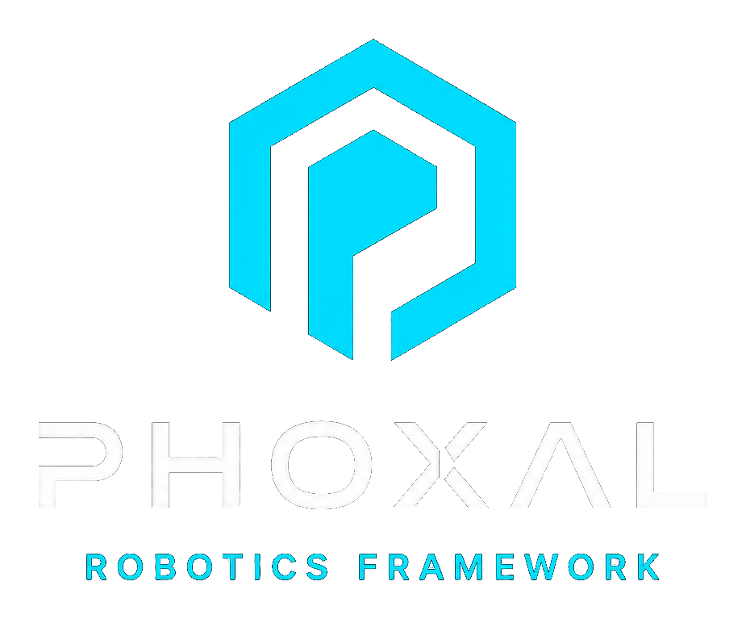

Authored robot model
Robot manifests, structure files, and component definitions remain the source of truth.

Pre-alpha / Phoxal Framework v1
Phoxal Framework is an opinionated Rust-first robotics suite that carries a robot from authored model through simulation, native execution, observability, and rollback-safe deployment.
The v1 North Star is a trustworthy improvement loop: record typed experience, evaluate candidates deterministically, and promote only immutable artifacts.
Architecture
Phoxal Framework keeps authority and meaning explicit from authoring through execution. Learning changes implementations, not the framework's runtime or wire model.
Robot manifests, structure files, and component definitions remain the source of truth.
Robot processes communicate through a framework-owned typed vocabulary, not project-private protocols.
Brains, services, drivers, simulators, and platform authorities remain isolated participants.
Webots and hardware execution use the same contracts, authorities, and logical-time semantics.
Recordings carry the state, timing, provenance, and outcomes needed to inspect and reproduce a run.
Promoted policies and models enter the ordinary immutable bundle, deployment, fallback, and rollback path.
Improvement loop
The goal is not to put an LLM in charge of a robot. Phoxal Framework owns the lifecycle boundaries that make improvement trustworthy; each application owns its mission, feedback, evaluation meaning, models, and policies.
Phoxal Framework should let robots improve from experience without giving up explicit authority, deterministic validation, observable state, simulation parity, repeatability, or rollback-safe deployment.
A deployed process never silently replaces production weights or materially rewrites its own policy.
Execution produces typed recordings, provenance, outcomes, and feedback.
Training or derivation happens outside the robot runtime and produces an inspectable candidate.
Deterministic scenarios compare the candidate against explicit acceptance thresholds.
Only a passing immutable artifact enters the next validated bundle, with fallback and rollback evidence.
V1 usability floor
Minimum Working Framework means a developer can move from authored robot to simulation and hardware, diagnose failures, and recover without editing framework internals. Reference robots qualify that generic path; they do not define the framework.
Author → validate → build an inspectable runtime bundle
Simulate → execute → record the same semantic graph
Deploy → attach → inspect → stop, restart, and roll back
Status
PHOXAL is pre-1.0 and the public repositories are moving quickly. It is ready to inspect, discuss, and use as a design direction; it is not yet a stable dependency. Breaking API and runtime changes are intentional and should fail loudly instead of silently drifting.